2024 Higher Computing Science marking instructions
Source: Scottish Qualifications Authority (SQA) / Qualifications Scotland. This is a StemInteract HTML companion, not an official HTML edition. Selectable text is supplied alongside original page images. Use the images or original PDF for equations, powers, fractions, vector notation, tables and diagrams; text extraction cannot fully preserve mathematical layout.
Jump to a question
PDF page 1
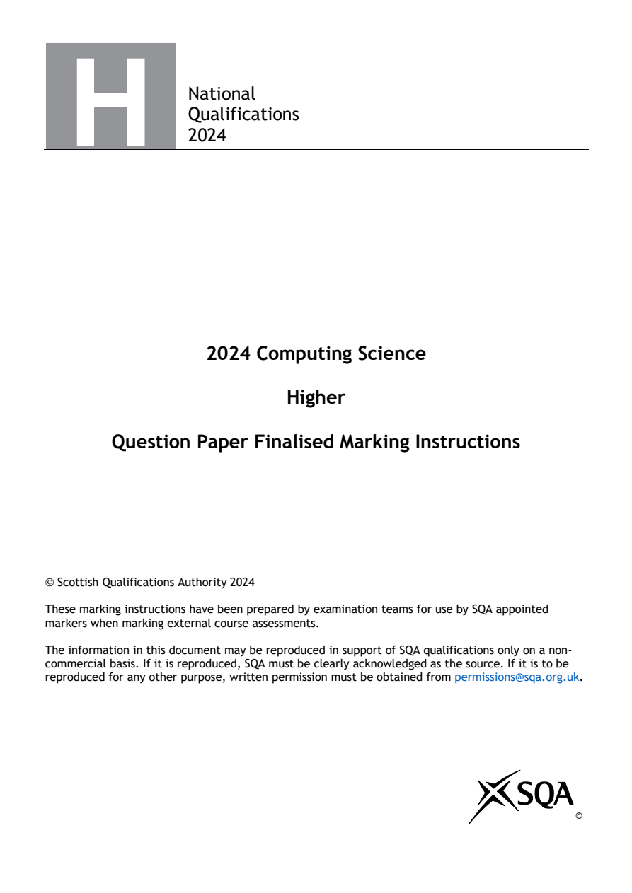
Selectable page text
National
Qualifications
2024
2024 Computing Science
Higher
Question Paper Finalised Marking Instructions
© Scottish Qualifications Authority 2024
These marking instructions have been prepared by examination teams for use by SQA appointed
markers when marking external course assessments.
The information in this document may be reproduced in support of SQA qualifications only on a non-
commercial basis. If it is reproduced, SQA must be clearly acknowledged as the source. If it is to be
reproduced for any other purpose, written permission must be obtained from permissions@sqa.org.uk.
©PDF page 2
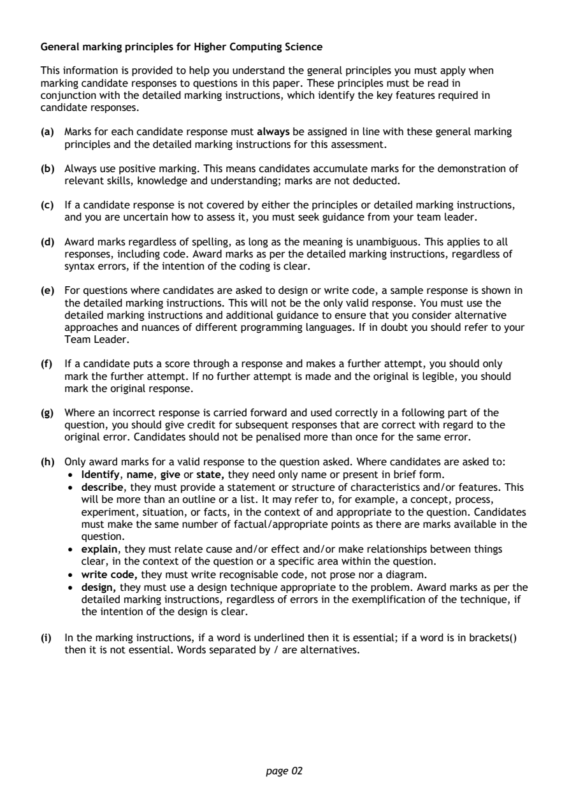
Selectable page text
General marking principles for Higher Computing Science
This information is provided to help you understand the general principles you must apply when
marking candidate responses to questions in this paper. These principles must be read in
conjunction with the detailed marking instructions, which identify the key features required in
candidate responses.
(a) Marks for each candidate response must always be assigned in line with these general marking
principles and the detailed marking instructions for this assessment.
(b) Always use positive marking. This means candidates accumulate marks for the demonstration of
relevant skills, knowledge and understanding; marks are not deducted.
(c) If a candidate response is not covered by either the principles or detailed marking instructions,
and you are uncertain how to assess it, you must seek guidance from your team leader.
(d) Award marks regardless of spelling, as long as the meaning is unambiguous. This applies to all
responses, including code. Award marks as per the detailed marking instructions, regardless of
syntax errors, if the intention of the coding is clear.
(e) For questions where candidates are asked to design or write code, a sample response is shown in
the detailed marking instructions. This will not be the only valid response. You must use the
detailed marking instructions and additional guidance to ensure that you consider alternative
approaches and nuances of different programming languages. If in doubt you should refer to your
Team Leader.
(f) If a candidate puts a score through a response and makes a further attempt, you should only
mark the further attempt. If no further attempt is made and the original is legible, you should
mark the original response.
(g) Where an incorrect response is carried forward and used correctly in a following part of the
question, you should give credit for subsequent responses that are correct with regard to the
original error. Candidates should not be penalised more than once for the same error.
(h) Only award marks for a valid response to the question asked. Where candidates are asked to:
• Identify, name, give or state, they need only name or present in brief form.
• describe, they must provide a statement or structure of characteristics and/or features. This
will be more than an outline or a list. It may refer to, for example, a concept, process,
experiment, situation, or facts, in the context of and appropriate to the question. Candidates
must make the same number of factual/appropriate points as there are marks available in the
question.
• explain, they must relate cause and/or effect and/or make relationships between things
clear, in the context of the question or a specific area within the question.
• write code, they must write recognisable code, not prose nor a diagram.
• design, they must use a design technique appropriate to the problem. Award marks as per the
detailed marking instructions, regardless of errors in the exemplification of the technique, if
the intention of the design is clear.
(i) In the marking instructions, if a word is underlined then it is essential; if a word is in brackets()
then it is not essential. Words separated by / are alternatives.
page 02PDF page 3
Question 1Question 2Question 3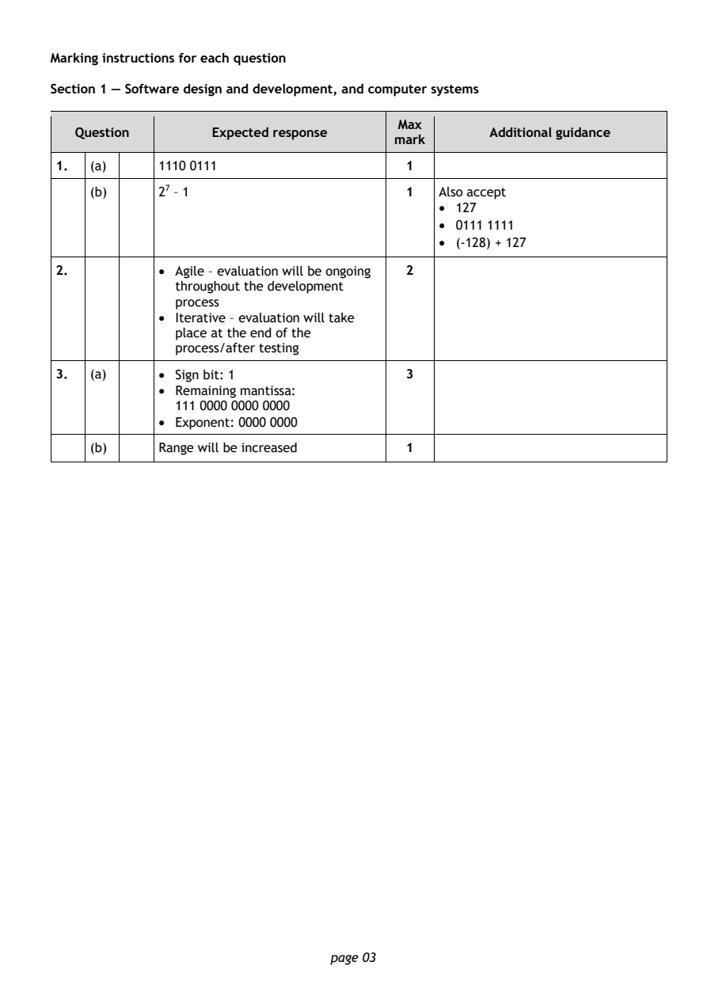
Selectable page text
Marking instructions for each question
Section 1 — Software design and development, and computer systems
Max
Question Expected response Additional guidance
mark
1. (a) 1110 0111 1
(b) 27 – 1 1 Also accept
• 127
• 0111 1111
• (-128) + 127
2. • Agile – evaluation will be ongoing 2
throughout the development
process
• Iterative – evaluation will take
place at the end of the
process/after testing
3. (a) • Sign bit: 1 3
• Remaining mantissa:
111 0000 0000 0000
• Exponent: 0000 0000
(b) Range will be increased 1
page 03PDF page 4
Question 4Question 5Question 6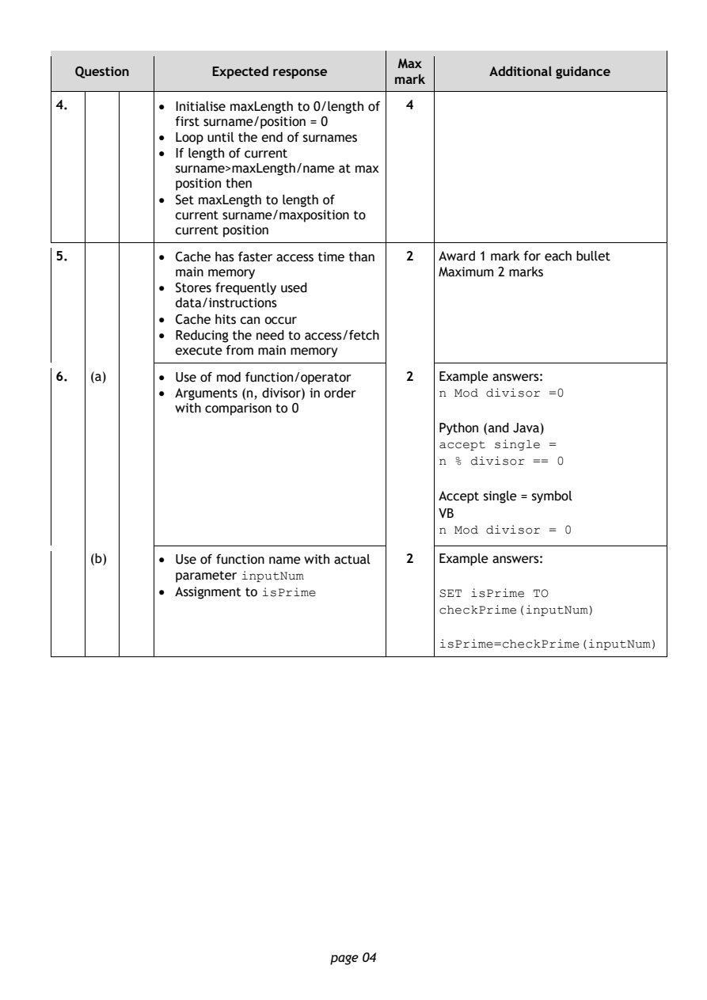
Selectable page text
Max
Question Expected response Additional guidance
mark
4. • Initialise maxLength to 0/length of 4
first surname/position = 0
• Loop until the end of surnames
• If length of current
surname>maxLength/name at max
position then
• Set maxLength to length of
current surname/maxposition to
current position
5. • Cache has faster access time than 2 Award 1 mark for each bullet
main memory Maximum 2 marks
• Stores frequently used
data/instructions
• Cache hits can occur
• Reducing the need to access/fetch
execute from main memory
6. (a) • Use of mod function/operator 2 Example answers:
• Arguments (n, divisor) in order n Mod divisor =0
with comparison to 0
Python (and Java)
accept single =
n % divisor == 0
Accept single = symbol
VB
n Mod divisor = 0
(b) • Use of function name with actual 2 Example answers:
parameter inputNum
• Assignment to isPrime SET isPrime TO
checkPrime(inputNum)
isPrime=checkPrime(inputNum)
page 04PDF page 5
Question 7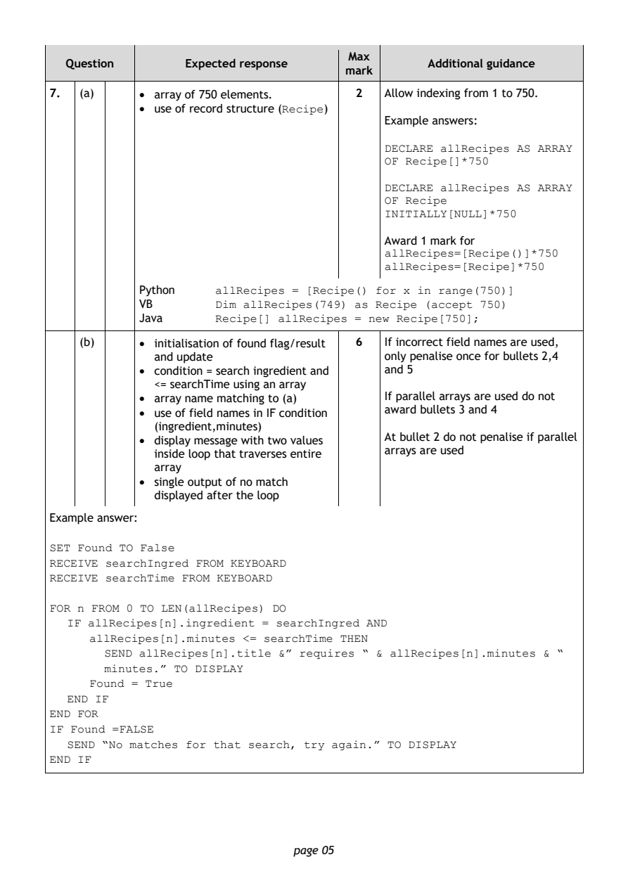
Selectable page text
Max
Question Expected response Additional guidance
mark
7. (a) • array of 750 elements. 2 Allow indexing from 1 to 750.
• use of record structure (Recipe)
Example answers:
DECLARE allRecipes AS ARRAY
OF Recipe[]*750
DECLARE allRecipes AS ARRAY
OF Recipe
INITIALLY[NULL]*750
Award 1 mark for
allRecipes=[Recipe()]*750
allRecipes=[Recipe]*750
Python allRecipes = [Recipe() for x in range(750)]
VB Dim allRecipes(749) as Recipe (accept 750)
Java Recipe[] allRecipes = new Recipe[750];
(b) • initialisation of found flag/result 6 If incorrect field names are used,
and update only penalise once for bullets 2,4
• condition = search ingredient and and 5
<= searchTime using an array
• array name matching to (a) If parallel arrays are used do not
• use of field names in IF condition award bullets 3 and 4
(ingredient,minutes)
At bullet 2 do not penalise if parallel
• display message with two values
arrays are used
inside loop that traverses entire
array
• single output of no match
displayed after the loop
Example answer:
SET Found TO False
RECEIVE searchIngred FROM KEYBOARD
RECEIVE searchTime FROM KEYBOARD
FOR n FROM 0 TO LEN(allRecipes) DO
IF allRecipes[n].ingredient = searchIngred AND
allRecipes[n].minutes <= searchTime THEN
SEND allRecipes[n].title &” requires “ & allRecipes[n].minutes & “
minutes.” TO DISPLAY
Found = True
END IF
END FOR
IF Found =FALSE
SEND “No matches for that search, try again.” TO DISPLAY
END IF
page 05PDF page 6
Question 8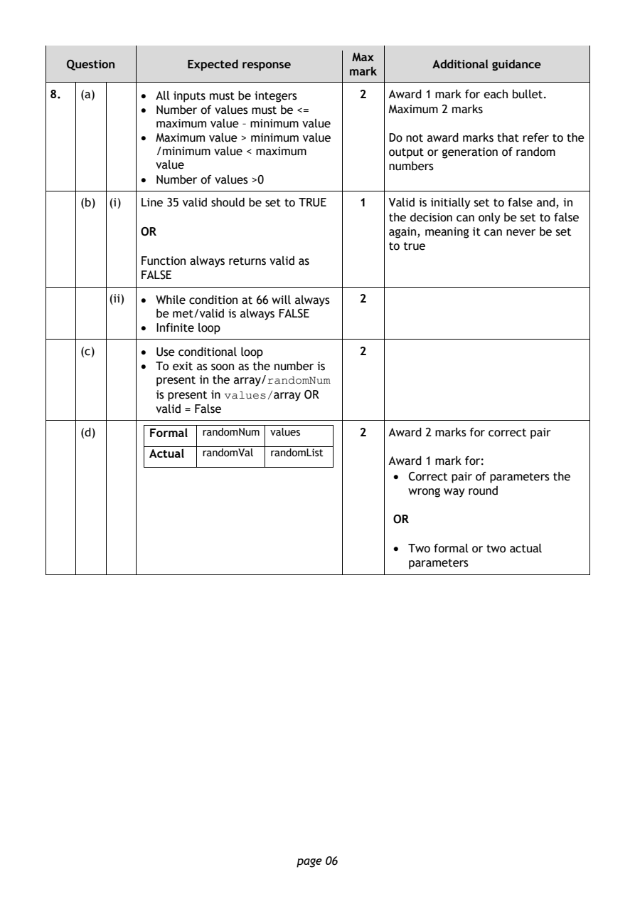
Selectable page text
Max
Question Expected response Additional guidance
mark
8. (a) • All inputs must be integers 2 Award 1 mark for each bullet.
• Number of values must be <= Maximum 2 marks
maximum value – minimum value
• Maximum value > minimum value Do not award marks that refer to the
/minimum value < maximum output or generation of random
value numbers
• Number of values >0
(b) (i) Line 35 valid should be set to TRUE 1 Valid is initially set to false and, in
the decision can only be set to false
OR again, meaning it can never be set
to true
Function always returns valid as
FALSE
(ii) • While condition at 66 will always 2
be met/valid is always FALSE
• Infinite loop
(c) • Use conditional loop 2
• To exit as soon as the number is
present in the array/randomNum
is present in values/array OR
valid = False
(d) Formal randomNum values 2 Award 2 marks for correct pair
Actual randomVal randomList
Award 1 mark for:
• Correct pair of parameters the
wrong way round
OR
• Two formal or two actual
parameters
page 06PDF page 7
Question 9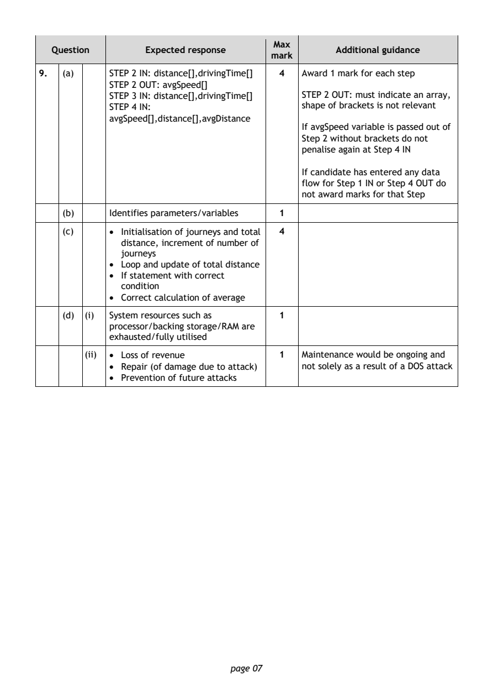
Selectable page text
Max
Question Expected response Additional guidance
mark
9. (a) STEP 2 IN: distance[],drivingTime[] 4 Award 1 mark for each step
STEP 2 OUT: avgSpeed[]
STEP 3 IN: distance[],drivingTime[] STEP 2 OUT: must indicate an array,
STEP 4 IN: shape of brackets is not relevant
avgSpeed[],distance[],avgDistance
If avgSpeed variable is passed out of
Step 2 without brackets do not
penalise again at Step 4 IN
If candidate has entered any data
flow for Step 1 IN or Step 4 OUT do
not award marks for that Step
(b) Identifies parameters/variables 1
(c) • Initialisation of journeys and total 4
distance, increment of number of
journeys
• Loop and update of total distance
• If statement with correct
condition
• Correct calculation of average
(d) (i) System resources such as 1
processor/backing storage/RAM are
exhausted/fully utilised
(ii) • Loss of revenue 1 Maintenance would be ongoing and
• Repair (of damage due to attack) not solely as a result of a DOS attack
• Prevention of future attacks
page 07PDF page 8
Question 10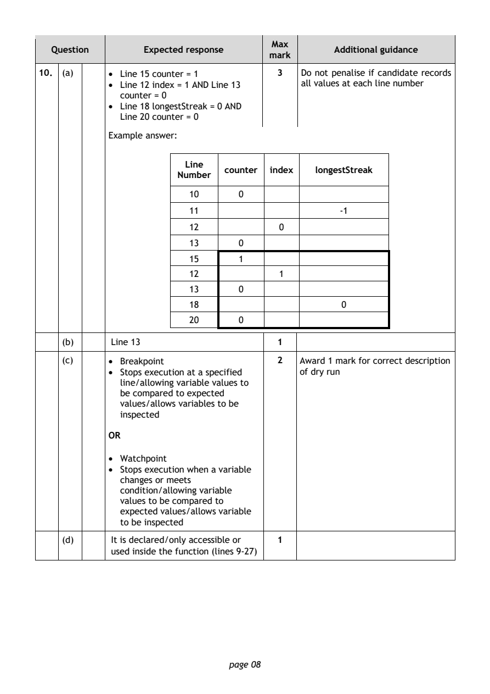
Selectable page text
Max
Question Expected response Additional guidance
mark
10. (a) • Line 15 counter = 1 3 Do not penalise if candidate records
• Line 12 index = 1 AND Line 13 all values at each line number
counter = 0
• Line 18 longestStreak = 0 AND
Line 20 counter = 0
Example answer:
Line
counter index longestStreak
Number
10 0
11 -1
12 0
13 0
15 1
12 1
13 0
18 0
20 0
(b) Line 13 1
(c) • Breakpoint 2 Award 1 mark for correct description
• Stops execution at a specified of dry run
line/allowing variable values to
be compared to expected
values/allows variables to be
inspected
OR
• Watchpoint
• Stops execution when a variable
changes or meets
condition/allowing variable
values to be compared to
expected values/allows variable
to be inspected
(d) It is declared/only accessible or 1
used inside the function (lines 9-27)
page 08PDF page 9
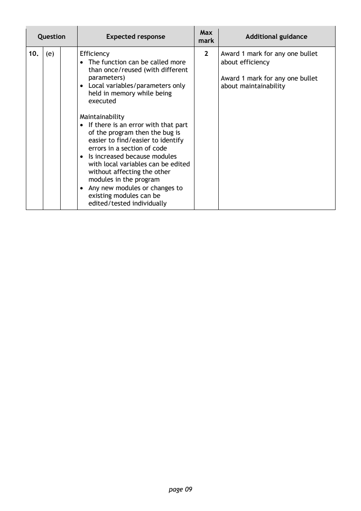
Selectable page text
Max
Question Expected response Additional guidance
mark
10. (e) Efficiency 2 Award 1 mark for any one bullet
• The function can be called more about efficiency
than once/reused (with different
parameters) Award 1 mark for any one bullet
• Local variables/parameters only about maintainability
held in memory while being
executed
Maintainability
• If there is an error with that part
of the program then the bug is
easier to find/easier to identify
errors in a section of code
• Is increased because modules
with local variables can be edited
without affecting the other
modules in the program
• Any new modules or changes to
existing modules can be
edited/tested individually
page 09PDF page 10
Question 11Question 12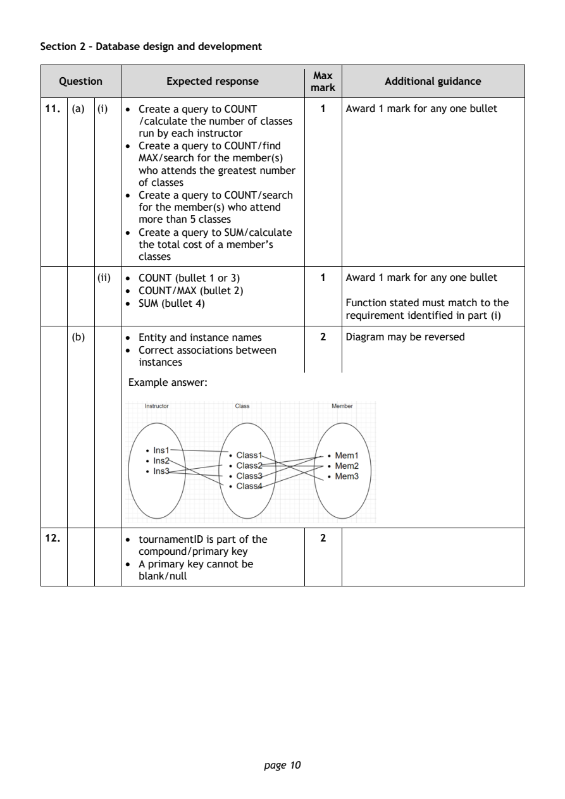
Selectable page text
Section 2 – Database design and development
Max
Question Expected response Additional guidance
mark
11. (a) (i) • Create a query to COUNT 1 Award 1 mark for any one bullet
/calculate the number of classes
run by each instructor
• Create a query to COUNT/find
MAX/search for the member(s)
who attends the greatest number
of classes
• Create a query to COUNT/search
for the member(s) who attend
more than 5 classes
• Create a query to SUM/calculate
the total cost of a member’s
classes
(ii) • COUNT (bullet 1 or 3) 1 Award 1 mark for any one bullet
• COUNT/MAX (bullet 2)
• SUM (bullet 4) Function stated must match to the
requirement identified in part (i)
(b) • Entity and instance names 2 Diagram may be reversed
• Correct associations between
instances
Example answer:
12. • tournamentID is part of the 2
compound/primary key
• A primary key cannot be
blank/null
page 10PDF page 11
Question 13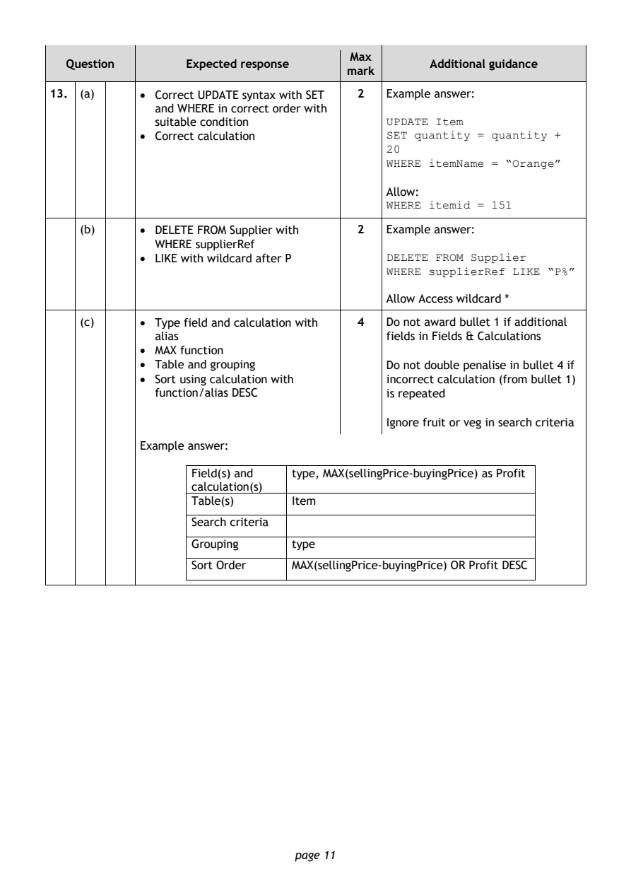
Selectable page text
Max
Question Expected response Additional guidance
mark
13. (a) • Correct UPDATE syntax with SET 2 Example answer:
and WHERE in correct order with
suitable condition UPDATE Item
• Correct calculation SET quantity = quantity +
20
WHERE itemName = “Orange”
Allow:
WHERE itemid = 151
(b) • DELETE FROM Supplier with 2 Example answer:
WHERE supplierRef
• LIKE with wildcard after P DELETE FROM Supplier
WHERE supplierRef LIKE “P%”
Allow Access wildcard *
(c) • Type field and calculation with 4 Do not award bullet 1 if additional
alias fields in Fields & Calculations
• MAX function
• Table and grouping Do not double penalise in bullet 4 if
• Sort using calculation with incorrect calculation (from bullet 1)
function/alias DESC is repeated
Ignore fruit or veg in search criteria
Example answer:
Field(s) and type, MAX(sellingPrice-buyingPrice) as Profit
calculation(s)
Table(s) Item
Search criteria
Grouping type
Sort Order MAX(sellingPrice-buyingPrice) OR Profit DESC
page 11PDF page 12
Question 14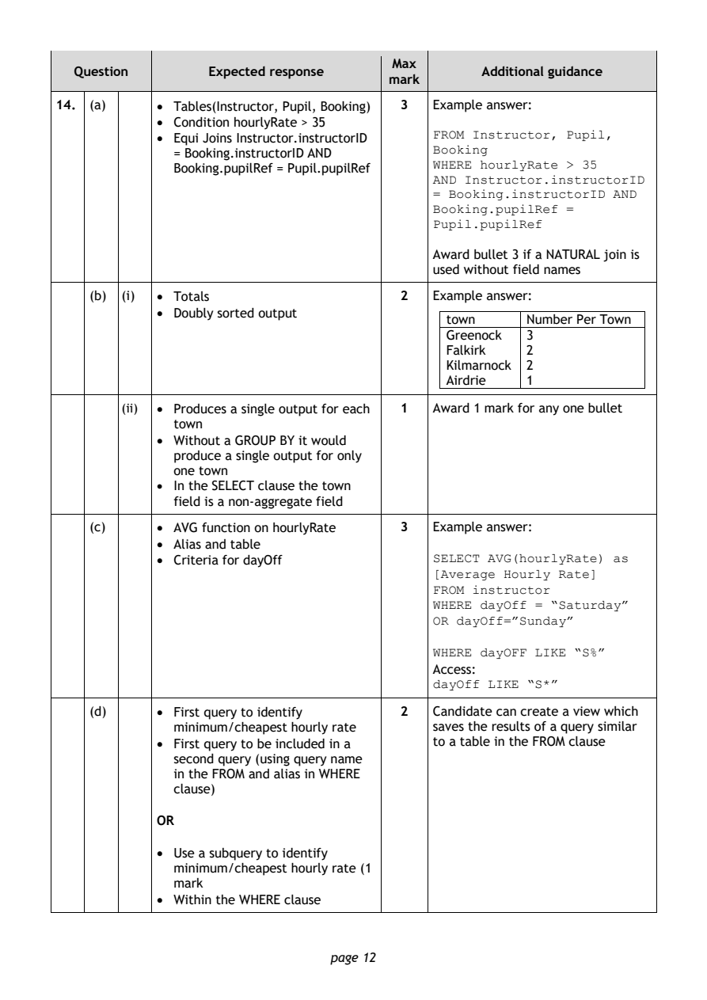
Selectable page text
Max
Question Expected response Additional guidance
mark
14. (a) • Tables(Instructor, Pupil, Booking) 3 Example answer:
• Condition hourlyRate > 35
FROM Instructor, Pupil,
• Equi Joins Instructor.instructorID
Booking
= Booking.instructorID AND
WHERE hourlyRate > 35
Booking.pupilRef = Pupil.pupilRef
AND Instructor.instructorID
= Booking.instructorID AND
Booking.pupilRef =
Pupil.pupilRef
Award bullet 3 if a NATURAL join is
used without field names
(b) (i) • Totals 2 Example answer:
• Doubly sorted output
town Number Per Town
Greenock 3
Falkirk 2
Kilmarnock 2
Airdrie 1
(ii) • Produces a single output for each 1 Award 1 mark for any one bullet
town
• Without a GROUP BY it would
produce a single output for only
one town
• In the SELECT clause the town
field is a non-aggregate field
(c) • AVG function on hourlyRate 3 Example answer:
• Alias and table
• Criteria for dayOff SELECT AVG(hourlyRate) as
[Average Hourly Rate]
FROM instructor
WHERE dayOff = “Saturday”
OR dayOff=”Sunday”
WHERE dayOFF LIKE “S%”
Access:
dayOff LIKE “S*”
(d) • First query to identify 2 Candidate can create a view which
minimum/cheapest hourly rate saves the results of a query similar
• First query to be included in a to a table in the FROM clause
second query (using query name
in the FROM and alias in WHERE
clause)
OR
• Use a subquery to identify
minimum/cheapest hourly rate (1
mark
• Within the WHERE clause
page 12PDF page 13
Question 15Question 16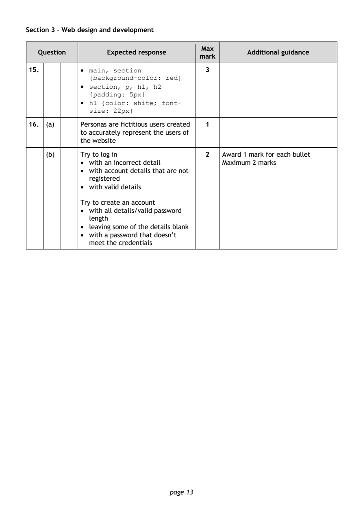
Selectable page text
Section 3 – Web design and development
Max
Question Expected response Additional guidance
mark
15. • main, section 3
{background-color: red}
• section, p, h1, h2
{padding: 5px}
• h1 {color: white; font-
size: 22px}
16. (a) Personas are fictitious users created 1
to accurately represent the users of
the website
(b) Try to log in 2 Award 1 mark for each bullet
• with an incorrect detail Maximum 2 marks
• with account details that are not
registered
• with valid details
Try to create an account
• with all details/valid password
length
• leaving some of the details blank
• with a password that doesn’t
meet the credentials
page 13PDF page 14
Question 17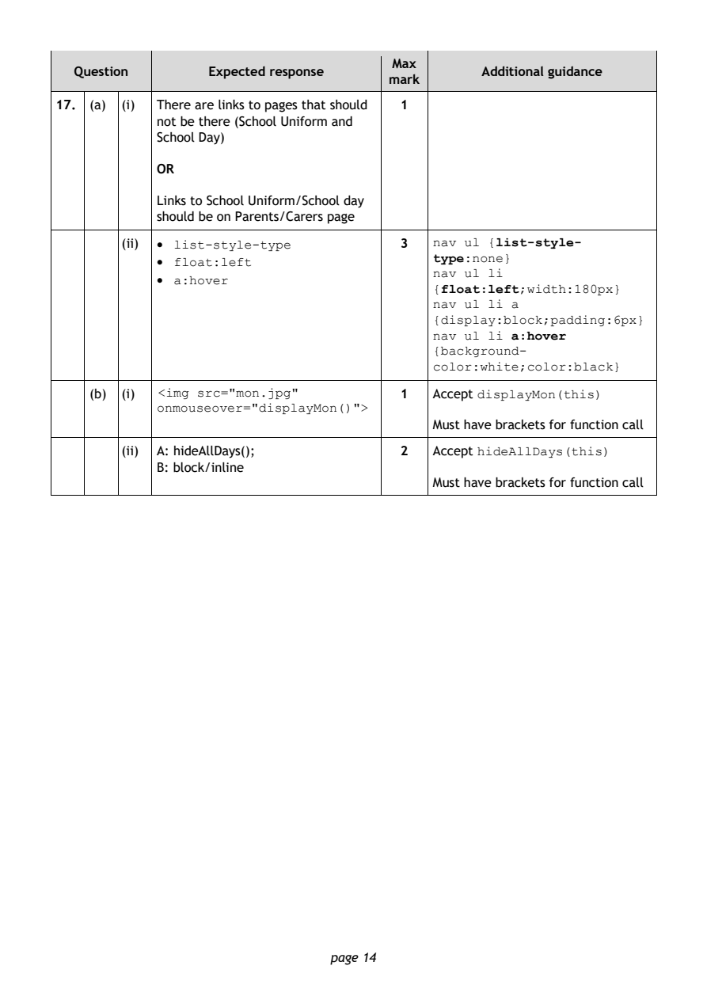
Selectable page text
Max
Question Expected response Additional guidance
mark
17. (a) (i) There are links to pages that should 1
not be there (School Uniform and
School Day)
OR
Links to School Uniform/School day
should be on Parents/Carers page
(ii) • list-style-type 3 nav ul {list-style-
type:none}
• float:left
nav ul li
• a:hover
{float:left;width:180px}
nav ul li a
{display:block;padding:6px}
nav ul li a:hover
{background-
color:white;color:black}
(b) (i) <img src="mon.jpg" 1 Accept displayMon(this)
onmouseover="displayMon()">
Must have brackets for function call
(ii) A: hideAllDays(); 2 Accept hideAllDays(this)
B: block/inline
Must have brackets for function call
page 14PDF page 15
Question 18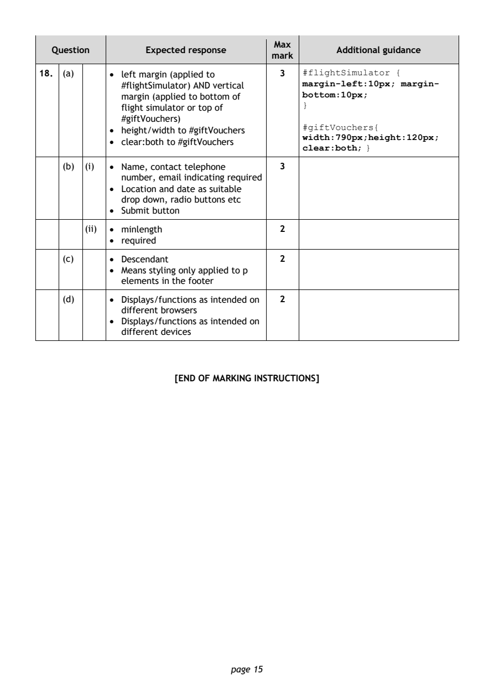
Selectable page text
Max
Question Expected response Additional guidance
mark
18. (a) • left margin (applied to 3 #flightSimulator {
#flightSimulator) AND vertical margin-left:10px; margin-
margin (applied to bottom of bottom:10px;
}
flight simulator or top of
#giftVouchers)
#giftVouchers{
• height/width to #giftVouchers
width:790px;height:120px;
• clear:both to #giftVouchers
clear:both; }
(b) (i) • Name, contact telephone 3
number, email indicating required
• Location and date as suitable
drop down, radio buttons etc
• Submit button
(ii) • minlength 2
• required
(c) • Descendant 2
• Means styling only applied to p
elements in the footer
(d) • Displays/functions as intended on 2
different browsers
• Displays/functions as intended on
different devices
[END OF MARKING INSTRUCTIONS]
page 15